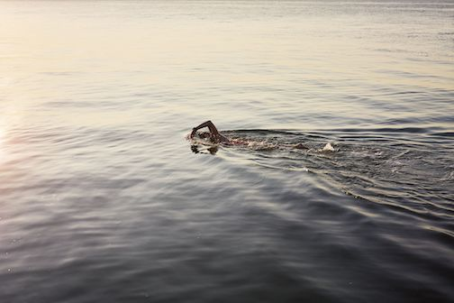

In swimming there are three common places you would swim

pros (p) and cons (c)
p: you won't get sunburned
p: often the tempature is more regulated and warmer
p: [in my opinion] it makes me more motivated
c: at the mercy of the elements (rain, sun, hail, wind, etc)

p: freedom of no pool limits
c: at the mercy of the elements (rain, sun, hail, wind, etc)
c: water tempature is not controled
Home